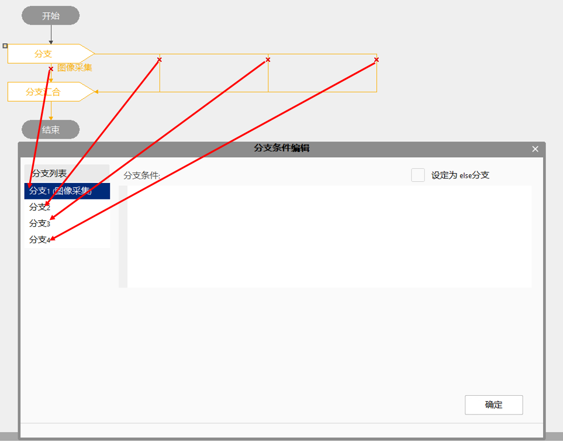

Biểu thức được dùng trong lưu đồ để thực hiện các phép toán logic hoặc gán biến, đóng vai trò rất quan trọng trong quá trình chạy lưu đồ.
Thêm biểu thức:
Dòng điều khiển: trực tiếp nhấp đúp vào đường link trong dòng điều khiển để thêm, ví dụ như nhánh hội tụ, nhấp đúp vào vị trí bắt đầu của đường link mũi tên đỏ trong hình dưới đây, sẽ hiện ra hộp thoại chỉnh sửa biểu thức; hỗ trợ xử lý hàng loạt điều kiện nhánh trong giao diện chỉnh sửa điều kiện nhánh, trước khi hoàn thành điều kiện nhánh hiện tại không thể chọn để thiết lập nhánh khác. Hỗ trợ đặt tên cho điều kiện nhánh, ví dụ nhánh “Thu thập hình ảnh”.

Công cụ tính toán biểu thức: trong lưu đồ nhấp chuột phải, chọn “Thêm mới - Điều khiển - Tính toán biểu thức”, thêm công cụ tính toán biểu thức, nhấp đúp công cụ để chỉnh sửa biểu thức;
Loại biểu thức: biểu thức gán, biểu thức số học, biểu thức logic;
Thành phần biểu thức: gồm toán hạng và toán tử;
Toán hạng:
Đến từ biến: nhập # sẽ tìm kiếm tất cả biến cục bộ; nhập @ sẽ tìm kiếm tất cả biến toàn cục;
Đến từ tham số công cụ hoặc kết quả thực thi: nhập số hiệu hoặc tên công cụ, sẽ tìm ra các tham số hoặc kết quả thực thi có thể dùng của công cụ đó;
Toán tử:
Logic và (A&&B), logic hoặc (A||B), logic phủ định (!A);
Bằng (A==B), khác (A!=B), lớn hơn (A>B), nhỏ hơn (A<B), lớn hơn hoặc bằng (A>=B), nhỏ hơn hoặc bằng (A<=B);
Cộng (A+B), trừ (A-B), nhân (A*B), chia (A/B), chia lấy dư (A%B);
Gán (A=B);
Dấu âm (-A).
Ưu tiên của toán tử (từ trên xuống dưới, ưu tiên giảm dần):
- ()
- !, - (dấu âm)
- *, /, %
- +, -
- <, <=, >, >=
- ==, !=
- &, ^, |
- &&, ||
- = (gán)
Chuyển đổi kiểu dữ liệu
Biểu thức hỗ trợ chuyển đổi ngầm giữa các kiểu dữ liệu double, float, long, int, short, char, v.v.;
Quy tắc chuyển đổi ngầm
1. Trong biểu thức gán, toán hạng bên phải sẽ được chuyển sang kiểu dữ liệu của toán hạng bên trái. Nếu chuyển từ kiểu cao cấp sang thấp cấp sẽ có mất mát độ chính xác hoặc cắt bớt, nên tránh sử dụng trong thực tế.
2. Trong biểu thức số học, nếu có một toán hạng là kiểu double, các toán hạng còn lại sẽ được chuyển sang kiểu double.
3. Trong biểu thức số học nếu không có toán hạng kiểu double mà có một toán hạng kiểu float, các toán hạng còn lại sẽ được chuyển sang kiểu float.
4. Trong biểu thức số học hỗn hợp kiểu, các kiểu short và char sẽ được nâng lên kiểu int.
Khác
Hoàn thiện toán hạng: khi dùng từ khóa tìm kiếm toán hạng, có thể dùng phím Tab để hoàn thiện kết quả tìm kiếm, tự động điền vào hộp chỉnh sửa biểu thức;
Chọn và điền toán hạng: nhấp chuột để chọn; nhấp đúp để điền vào hộp chỉnh sửa biểu thức;
Duyệt toán hạng: có thể kéo thanh cuộn bên phải hoặc dùng phím mũi tên lên xuống trên bàn phím để duyệt;
Lưu và thoát: nhấp “Xác nhận” hoặc nhấn phím Enter trên bàn phím;